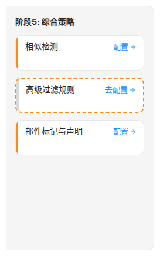
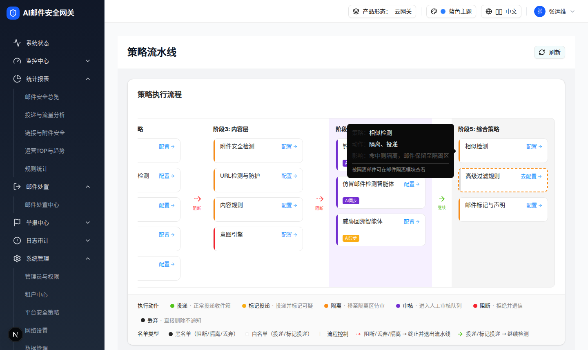

2.1 策略流水线入口卡片（相似检测 Policy Card）
| 交互层级 | 层级0：页面默认态中的策略入口卡片（需横向滚动到阶段5） |
|---|---|
| 触发路径 | 打开 /filter-rules/pipeline → 流水线容器横向滚动 → 阶段5“综合策略”列 → “相似检测”卡片。 |
| 可点击目标 | 浏览器实测卡片 220×60px（含左侧 4px 橙色色条 #fa8c16，节点数 9）；点击卡片整体或“配置 →”按钮均打开综合策略抽屉并选中相似检测。 |
| 悬浮 Tooltip | hover 300ms 后右侧出现深色 Tooltip：“策略：相似检测 / 动作：隔离、投递 / 影响：命中则隔离，邮件保留至隔离区”，底部附注“被隔离邮件可在邮件隔离模块查看”（configurable 类型专属附注）。 |
0交互层级 0：策略卡默认态（hover 卡片可见 Tooltip，点击跳转 2.2）
相似检测
配置 →
策略：相似检测
动作：隔离、投递
影响：命中则隔离，邮件保留至隔离区
被隔离邮件可在邮件隔离模块查看
动作：隔离、投递
影响：命中则隔离，邮件保留至隔离区
被隔离邮件可在邮件隔离模块查看


| 元素 | 实际文案/属性 | 交互行为 | 备注 |
|---|---|---|---|
| 卡片容器 | w-[220px] h-[60px] rounded-lg，hover 边框变 #1890FF、背景 #E6F7FF | 点击打开综合策略抽屉（setComprehensiveDrawerPolicy("similarDetection")） | 卡片无今日命中等统计（极简纯导航入口）；源码 mock 数据 todayHits 34 / blocked 25 / exempted 9 仅存于数据层 |
| 左侧色条 | 4px 宽，bg-[#fa8c16] 橙色 | 无独立交互；图例高亮“隔离”时本卡加蓝色 ring | 由 type = configurable 推导（configurable → 隔离主动作） |
| 卡片标题 | 相似检测 | — | i18n key pipeline.similarDetection；注意与模块内标题“相似邮件与主题检测”不同（见差异 D-8） |
| 配置按钮 | “配置” + ArrowRight(12px) 图标，蓝色 #1890FF | stopPropagation 后与卡片同一打开逻辑 | i18n key pipeline.configBtn；未配置策略显示“去配置”（本卡不属于 unconfigured 集合） |
| Tooltip | 策略：相似检测 / 动作：隔离、投递 / 影响：命中则隔离，邮件保留至隔离区 / 被隔离邮件可在邮件隔离模块查看 | hover 300ms 延时出现，side=right，max-w-[280px] | 动作/影响由 configurable 类型统一生成（pipeline.actionQuarantineAction、pipeline.actionDeliver、pipeline.policyEffectQuarantine、pipeline.quarantineModuleLink） |
DOM 树比对结果
| 比对项 | demo 实际 DOM | 提取/预览 HTML | 是否一致 |
|---|---|---|---|
| 根节点 | div.w-[220px].h-[60px].cursor-pointer.flex，节点数 9 | a.preview-card 220×60，色条 + 标题行结构一致 | 一致（a 代 div 承载点击语义） |
| 色条 | 首子节点 div.w-1.bg-[#fa8c16] | .preview-bar 4px 橙色 | 一致 |
| 关键文案 | “相似检测” + “配置”（innerText：相似检测 | 配置） | 相似检测 / 配置 → | 一致 |
| 统计/AI 标签等条件节点 | 未渲染（非阶段4、非未配置） | 未包含 | 一致 |
| Tooltip 内容 | 浏览器 hover 实测 4 行文案（见截图） | card-tip 同文案 | 一致 |